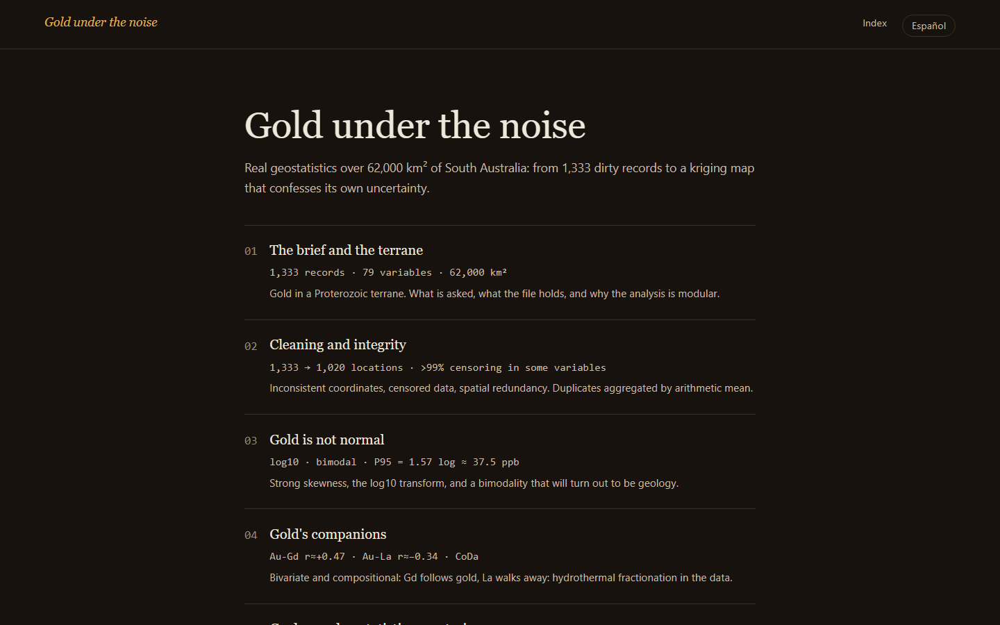

Erasmus Mundus EMerald · Bélgica / Francia / Suecia
No se recupera lo que no se sabe medir.
Ingeniero de procesamiento de minerales. Flotación, hidrometalurgia, materias primas críticas y economía circular.
Quién soy
Soy ingeniero de minas y metalurgia, colombiano, ahora en el máster Erasmus Mundus EMerald de Georesources Engineering entre Bélgica, Francia y Suecia. Me gradué primero de mi promoción en la Universidad Nacional de Colombia, con cuadro de honor semestre tras semestre.
La crisis de los metales críticos es fácil de enunciar y difícil de esquivar. El mundo se está electrificando: las turbinas de viento, las redes eléctricas, los vehículos eléctricos y las baterías detrás de todos ellos necesitan cobre, litio, cobalto y tierras raras en cantidades que nunca hemos minado. El reciclaje todavía no puede cerrar ese ciclo, porque solo se recicla lo que se compró hace décadas, cuando el mundo compraba mucho menos. Así que la mayor parte del metal de mañana seguirá saliendo del suelo, de depósitos cada año más pobres, más finos y más complejos químicamente.
Creo que la respuesta honesta a eso no son máquinas más grandes sino mejores preguntas: innovación, curiosidad e ingenio aplicados a cada paso del proceso. Por eso, en paralelo al máster, me he formado por mi cuenta en proyectos independientes de machine learning y otras técnicas de ingeniería que un doctorado o un proyecto industrial van a terminar necesitando.
Credenciales
- Bélgica · Francia · SueciaMáster en Ingeniería de GeorecursosErasmus Mundus EMerald, de 2025 a 2027. Universidad de Lieja, Universidad de Lorena y Universidad Tecnológica de Luleå, con beca EMJM.
- Primer puestoIngeniería de Minas y MetalurgiaUniversidad Nacional de Colombia, 2024. Primero de la promoción, con la beca al mejor promedio académico.
- ColombiaBecas y distincionesBeca nacional COLFUTURO a la excelencia académica, beca Prodeminas, cuadro de honor, lista del decano.
- ES · EN · FRIdiomasEspañol nativo. Inglés C1, TOEFL iBT 106 de 120. Francés básico y mejorando, porque un tercio del máster ocurre en Francia.
Los proyectos
Cuatro proyectos de análisis de datos, cada uno una oportunidad para experimentar: modelos nuevos, pruebas estadísticas nuevas, rincones nuevos de la programación. Todos corren sobre datos reales, y cada uno termina con un resultado medido.
- 01
 FrothMapea un campo científico por significado, para que una revisión de literatura deje de ser cinco papers escogidos a dedo.44 subtemas, con nombre y puentesPLN · Clustering · Visualización de datosVer en GitHub ↗
FrothMapea un campo científico por significado, para que una revisión de literatura deje de ser cinco papers escogidos a dedo.44 subtemas, con nombre y puentesPLN · Clustering · Visualización de datosVer en GitHub ↗ - 02
 Sílice en una planta de flotación de hierro¿Puede un modelo cantar la ley del concentrado antes que el laboratorio? Catorce módulos para averiguar que no, y por qué.+0,009 de R² sobre nadaAnálisis exploratorio · Machine learning · Series de tiempoAbrir el curso ↗
Sílice en una planta de flotación de hierro¿Puede un modelo cantar la ley del concentrado antes que el laboratorio? Catorce módulos para averiguar que no, y por qué.+0,009 de R² sobre nadaAnálisis exploratorio · Machine learning · Series de tiempoAbrir el curso ↗ - 03
 ConcentraConvierte el temario público de un curso en una hoja de estudio que sí puedes consultar después.12 casos sobre datos realesEstadística · Regresión · Evaluación de modelosAbrir Concentra ↗
ConcentraConvierte el temario público de un curso en una hoja de estudio que sí puedes consultar después.12 casos sobre datos realesEstadística · Regresión · Evaluación de modelosAbrir Concentra ↗ - 04

Oro bajo el ruidoNueve capítulos bilingües de geoestadística real: 1.333 registros sucios de oro en South Australia se convierten en un mapa de kriging que declara su propia incertidumbre.una estructura de 4.470 m, validadaGeoestadística · Estimación espacialAbrir los capítulos ↗
Contacto
Busco un doctorado en procesamiento de minerales o metalurgia extractiva a partir de 2027. Materias primas críticas, flotación, hidrometalurgia, o la parte de economía circular de cualquiera de las tres. Si eso se cruza con tu trabajo, escríbeme.